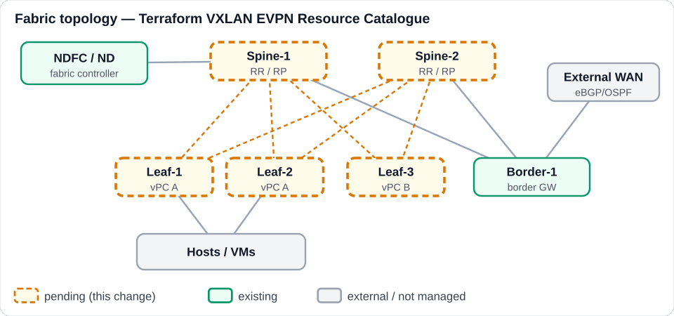
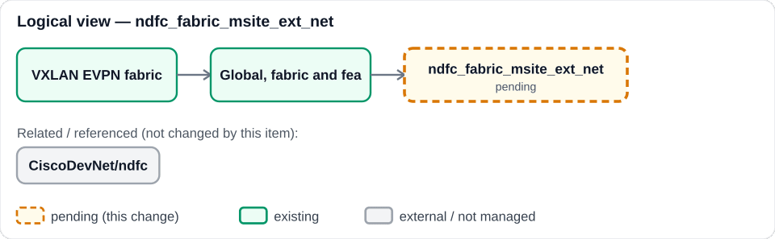

| ACI NaC Pipeline · ndfc_fabric_msite_ext_net → NDFC (ndfc provider) · pre-test · run tmpl-tvx-006 |
| ⏳ APPROVAL REQUIRED — template. Pre-test not collected; nothing has been applied. |
The pipeline has prepared ndfc_fabric_msite_ext_net for NDFC (ndfc provider). Resource to configure an Multi-Site Network Fabric. Only creation/updation/deletion of the fabric is supported, resources on top of the fabric are not supported yet.
This change covers 1 object(s): 1 Terraform resource block(s) (ndfc_fabric_msite_ext_net). Review the context, design values and pre-test summary below, then approve or deny. |
| Pipeline |
|
Context - please read before approving- This is a catalogue template for ndfc_fabric_msite_ext_net from Terraform VXLAN EVPN Resource Catalogue. Values are the example / placeholder values in the catalogue, not a live design.
- Change scope: 1 Terraform resource block(s) (ndfc_fabric_msite_ext_net). Target:
NDFC (ndfc provider). - Source: model
models/ndfc_fabric_msite_ext_net.yml, Terraform file tf/006_ndfc_fabric_msite_ext_net.tf. - Credentials are placeholders only (
{{ ndfc_password }}). Nothing has been applied and no controller was contacted. - Pre-test, health score and fault counts are not collected (template). Run the real pre-test on your self-hosted runner before approving a live change.
| |
| Decision required |
|
Each button opens a reply to 179172@gmail.com with the subject Re: ARR Simulator [APPROVAL REQUIRED] ndfc_fabric_msite_ext_net (run tmpl-tvx-006) and the body APPROVE or REJECT. You can also reply to this email with that word. |
| Fabric topology |
 |
| Logical view |

Legend: dashed amber = pending (this change) · green = existing · grey = external / not managed. Diagrams are original illustrations of the example design. If they do not show, open the web preview. |
| Design values |
| Parameter | Value (example) | Note |
|---|
| aaa_remote_ip_enabled | False | | | bgp_as | 65000 | | | bootstrap_multisubnet | #Scope_Start_IP, Scope_End_IP, Scope_Default_Gateway, Scope_Subnet_Prefix | Scope_Start_IP, Scope_End_IP, Scope_Default_Gateway, Scope_Subnet_Prefix' | | cdp_enable | False | | | deploy | False | | | dhcp_enable | False | | | enable_netflow | False | | | enable_nxapi | False | | | enable_nxapi_http | False | | | fabric_name | TF_FABRIC_MSITE_EXT_NET | | | feature_ptp | False | | | inband_mgmt | False | | | is_read_only | True | | | mpls_handoff | False | | | netflow_exporter_list | ${jsonencode({"NETFLOW_EXPORTER_LIST" = [{"EXPORTER_NAME" = "Test2", "IP" = "198.51.100.1… | | | netflow_monitor_list | ${jsonencode({"NETFLOW_MONITOR_LIST" = [{"MONITOR_NAME" = "Test", "RECORD_NAME" = "Test1"… | | | netflow_record_list | ${jsonencode({"NETFLOW_RECORD_LIST" = [{"RECORD_NAME" = "Test1", "RECORD_TEMPLATE" = "net… | | | netflow_sampler_list | ${jsonencode({"NETFLOW_SAMPLER_LIST" = [{"SAMPLER_NAME" = "Test1", "NUM_SAMPLES" = 12, "S… | | | nxapi_http_port | 80 | | | nxapi_https_port | 443 | | | pm_enable | False | | | power_redundancy_mode | ps-redundant | | | snmp_server_host_trap | True | | | subinterface_range | 2-511 | |
|
| Change preview |
# 006 ndfc_fabric_msite_ext_net — 1. Global, fabric and features
# Provider CiscoDevNet/ndfc 0.3.1. Docs: https://registry.terraform.io/providers/CiscoDevNet/ndfc/0.3.1/docs/resources/fabric_msite_ext_net
# Reads ../models/ndfc_fabric_msite_ext_net.yml (yamldecode). Edit the model, not this file.
locals {
ndfc_fabric_msite_ext_net = yamldecode(file("${path.module}/../models/ndfc_fabric_msite_ext_net.yml"))["ndfc_fabric_msite_ext_net"]
}
resource "ndfc_fabric_msite_ext_net" "this" {
aaa_remote_ip_enabled = local.ndfc_fabric_msite_ext_net.aaa_remote_ip_enabled
aaa_server_conf = local.ndfc_fabric_msite_ext_net.aaa_server_conf
allow_nxc = local.ndfc_fabric_msite_ext_net.allow_nxc
bgp_as = local.ndfc_fabric_msite_ext_net.bgp_as
bootstrap_conf = local.ndfc_fabric_msite_ext_net.bootstrap_conf
bootstrap_conf_xe = local.ndfc_fabric_msite_ext_net.bootstrap_conf_xe
bootstrap_enable = local.ndfc_fabric_msite_ext_net.bootstrap_enable
bootstrap_multisubnet = local.ndfc_fabric_msite_ext_net.bootstrap_multisubnet
cdp_enable = local.ndfc_fabric_msite_ext_net.cdp_enable
dci_subnet_range = local.ndfc_fabric_msite_ext_net.dci_subnet_range
dci_subnet_target_mask = local.ndfc_fabric_msite_ext_net.dci_subnet_target_mask
deploy = local.ndfc_fabric_msite_ext_net.deploy
deployment_freeze = local.ndfc_fabric_msite_ext_net.deployment_freeze
deployment_status = local.ndfc_fabric_msite_ext_net.deployment_status
dhcp_enable = local.ndfc_fabric_msite_ext_net.dhcp_enable
dhcp_end = local.ndfc_fabric_msite_ext_net.dhcp_end
dhcp_ipv6_enable = local.ndfc_fabric_msite_ext_net.dhcp_ipv6_enable
dhcp_start = local.ndfc_fabric_msite_ext_net.dhcp_start
domain_name = local.ndfc_fabric_msite_ext_net.domain_name
enable_aaa = local.ndfc_fabric_msite_ext_net.enable_aaa
enable_netflow = local.ndfc_fabric_msite_ext_net.enable_netflow
enable_nxapi = local.ndfc_fabric_msite_ext_net.enable_nxapi
enable_nxapi_http = local.ndfc_fabric_msite_ext_net.enable_nxapi_http
enable_real_time_backup = local.ndfc_fabric_msite_ext_net.enable_real_time_backup
enable_rt_intf_stats = local.ndfc_fabric_msite_ext_net.enable_rt_intf_stats
enable_scheduled_backup = local.ndfc_fabric_msite_ext_net.enable_scheduled_backup
ext_fabric_type = local.ndfc_fabric_msite_ext_net.ext_fabric_type+35 more lines in the full file. |
| Pre-test summary |
| Check | Tool | Result |
|---|
| Syntax / schema validation | terraform validate | not collected (template) | | Dry run / plan | terraform plan | not collected (template) | | Existing object / conflict check | controller query | not collected (template) | | Fabric health score | controller health | not collected (template) | | Faults (critical / major) | controller faults | not collected (template) | | Pre-change config backup | snapshot / export | not collected (template) |
|
| ARR Simulator · approval email template v1 · 26 Nov 2026, 8:48 PM AEDT · Terraform VXLAN EVPN Resource Catalogue · item 006. Template only: no controller was contacted and no results were collected. Catalogue: zFrontier / Terraform VXLAN EVPN Resource Catalogue |